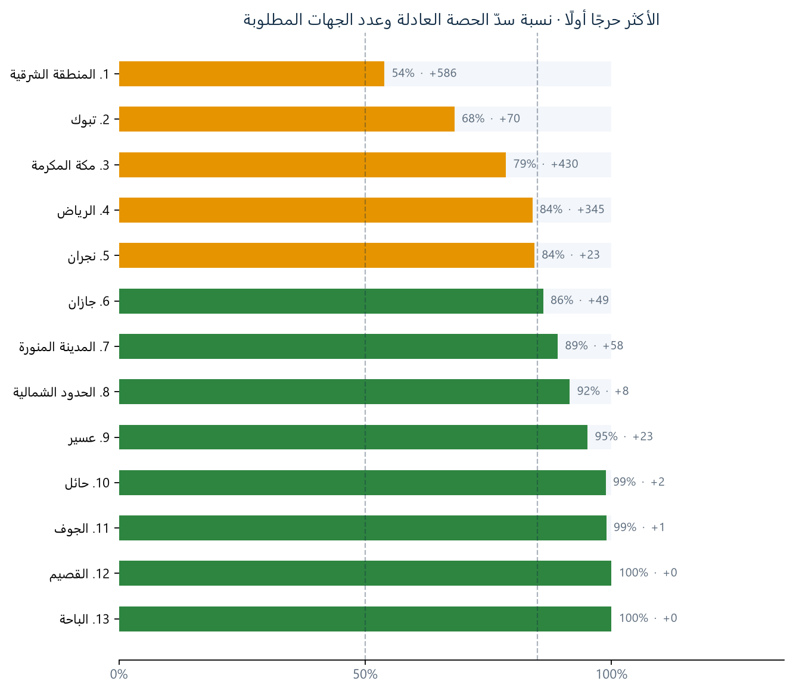
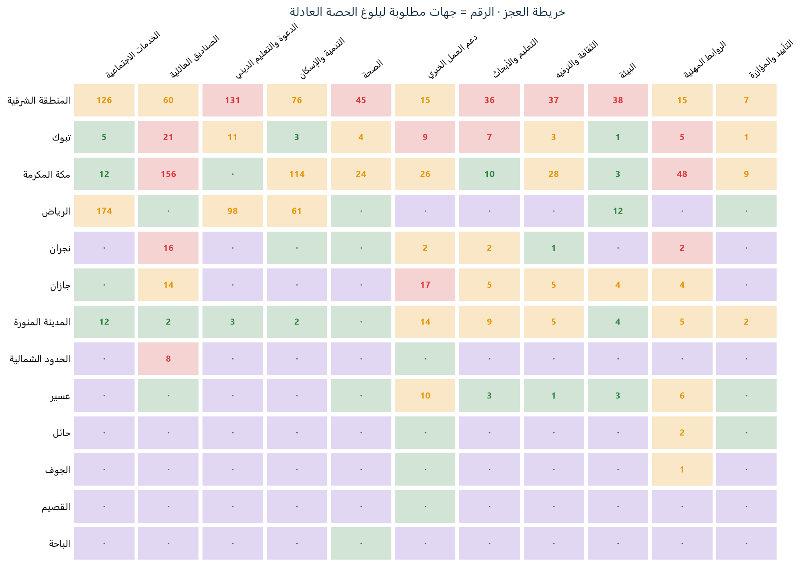
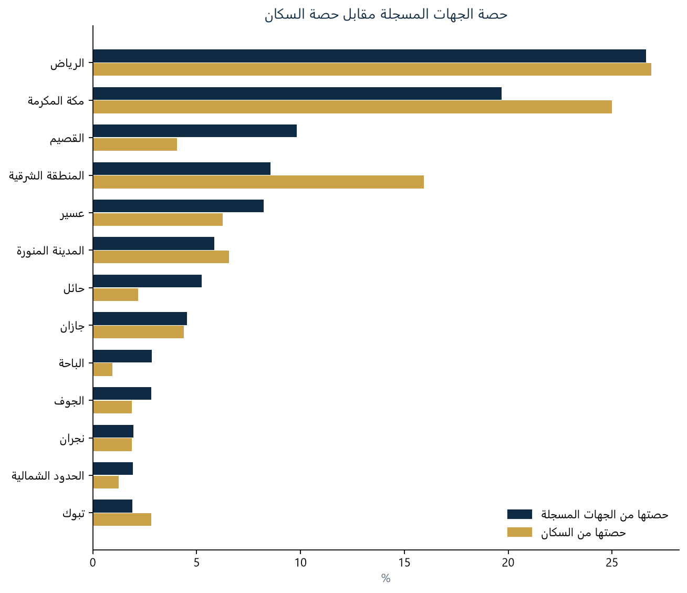
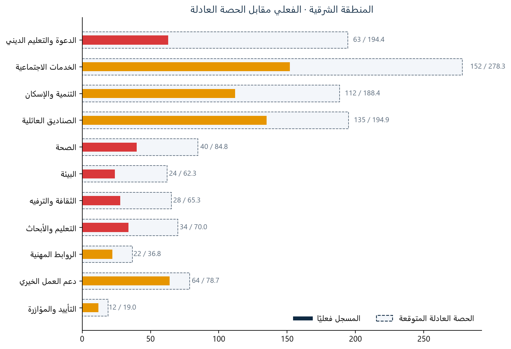

أُنشئ تلقائيًا من مخرجات خط التحليل بتاريخ 2026-10-28 22:44.
انطلق المشروع من سؤال بحثي: هل ينمو القطاع الثالث بتوازن داخل كل منطقة من مناطق المملكة وعبر مختلف مجالات العمل، أم أنه يتمركز جغرافيًا وقطاعيًا؟ وتكتسب الإجابة أهميتها من مستهدف رؤية 2030 برفع مساهمة القطاع غير الربحي في الناتج المحلي من 0.99% إلى 5% — وهو نمو لا يتحقق بكفاءة إذا بقي التوزيع غير متوازن بين المناطق والمجالات.
تقوم الفكرة على بناء لوحة قرار تفاعلية تقارن التوزيع الفعلي للجهات غير الربحية المسجلة مع الحصة العادلة المستمدة من وزن كل منطقة السكاني، وذلك لكل مجال من مجالات العمل على حدة. فبدل الاكتفاء بعدّ الجهات وطنيًا، تجيب اللوحة عن سؤال أدق: *كم جهة تحتاجها كل منطقة في كل مجال لتطابق حصتها من السكان؟*
المبرر العملي للفكرة أن غالب الجهات غير الربحية تخدم نطاق منطقتها؛ فغياب مجال ما في منطقة قد يعني محدودية وصول سكانها إلى تلك الخدمة — وهو ما تشير إليه تقارير رسمية، منها ما أورده تقرير هيئة الإحصاء من أن نسبة من ذوي الإعاقة لم يلتحقوا بجمعيات أو مراكز تأهيل لعدم وجودها في مناطقهم. ومن هنا، فإن رصد الفجوات القطاعية داخل كل منطقة يمكّن صانع القرار من توجيه التأسيس والدعم نحو المجالات الأشد نقصًا، مع مراعاة سياق كل منطقة وطبيعة احتياجاتها.
اعتمد التحليل على 8,012 كيانًا غير ربحي من سجلات منصة نوى بعد التنظيف والتصنيف، مقابل بيانات السكان من تعداد السعودية 2022 الصادر عن الهيئة العامة للإحصاء. وتبقى الفكرة بحثية واعدة يحدّها شحّ البيانات المفتوحة؛ إذ تعذّر دمج مؤشرات الاحتياج الفعلي (كالإعاقة والبطالة) لقدم أغلب ما هو متاح منها — وهو ما وُثّق بوضوح ضمن حدود القراءة في هذا التقرير.
السؤال: هل ينمو القطاع الثالث بتوازن بين مناطق المملكة ومجالات العمل، وكم جهة تحتاجها كل منطقة لتطابق حصتها من السكان؟
notebooks/cleaning_data.ipynb، والناتج مصنف Saudi_Charities_Governance_Final_2026.xlsx.unifiedNumber700 مفتاحًا أساسيًا وحذف عمود id التالف؛ 8,012 سجلًا بمعرّف موحد فريد من أصل 8,012.supervisor_source, category_source).members_count)؛ لا تدخل بيانات الأفراد في أي مخرج.PASSED_WITH_WARNINGS.1. التحقق: معرّف فريد لكل سجل، وأعمدة مطلوبة، وتوحيد أسماء المناطق مع جدول السكان (تعداد 2022).
2. الحصة العادلة لكل منطقة ومجال: الحصة العادلة = إجمالي جهات المجال وطنيًا × (سكان المنطقة ÷ إجمالي السكان).
3. الفجوة: الفجوة = الحصة العادلة − المسجل فعليًا، وعدد الجهات المطلوبة هو الفجوة مقرّبة وغير سالبة.
4. نسبة التغطية = المسجل ÷ الحصة العادلة، وتُصنَّف بحدود 0.5 و0.85 و1.25:
| الفئة | نسبة التغطية |
|---|---|
| عجز حرج | أقل من 50% من الحصة العادلة |
| فجوة متوسطة | من 50% إلى أقل من 85% |
| متوازن | من 85% إلى 125% |
| تشبع | أعلى من 125% |
5. نسبة سدّ المنطقة تحسب كل مجال حتى حدّ حصته فقط، فلا يُخفي فائضٌ في مجال نقصًا في آخر. وبها تُرتَّب لوحة الأكثر حرجًا من الأسوأ إلى الأفضل.
| # | المنطقة | نسبة سدّ الحصة العادلة | جهات مطلوبة | مجالات حرجة | الأشد نقصًا |
|---|---|---|---|---|---|
| 1 | المنطقة الشرقية | 54% | 586 | 5 | الدعوة والتعليم الديني |
| 2 | تبوك | 68% | 70 | 4 | الصناديق العائلية |
| 3 | مكة المكرمة | 79% | 430 | 2 | الصناديق العائلية |
| 4 | الرياض | 84% | 345 | 0 | الخدمات الاجتماعية |
| 5 | نجران | 84% | 23 | 2 | الصناديق العائلية |
| المجال | جهات وطنيًا | جهات مطلوبة | مناطق في العجز الحرج |
|---|---|---|---|
| الخدمات الاجتماعية | 1,746 | 329 | 0 |
| الصناديق العائلية | 1,223 | 277 | 4 |
| الدعوة والتعليم الديني | 1,220 | 243 | 1 |
| التنمية والإسكان | 1,182 | 256 | 0 |
| الصحة | 532 | 73 | 1 |
| دعم العمل الخيري | 494 | 93 | 2 |
| التعليم والأبحاث | 439 | 72 | 2 |
| الثقافة والترفيه | 410 | 80 | 1 |
| البيئة | 391 | 65 | 1 |
| الروابط المهنية | 231 | 88 | 3 |
| التأييد والمؤازرة | 119 | 19 | 0 |




| الملف | المحتوى |
|---|---|
outputs/dashboard_data.json | بيانات اللوحة المحسوبة مسبقًا |
outputs/entities.json | فهرس بحث الكيانات بلا بيانات شخصية |
outputs/population_coverage_analysis.csv | المقارنة بالحصة السكانية لكل منطقة ومجال |
outputs/gaps_analysis_report.csv | مصفوفة التغطية الوصفية |
outputs/data_quality_report.json | تقرير جودة البيانات |
outputs/figures/ | نسخ ثابتة من رسوم اللوحة |
dashboard/ | لوحة القرار التفاعلية |